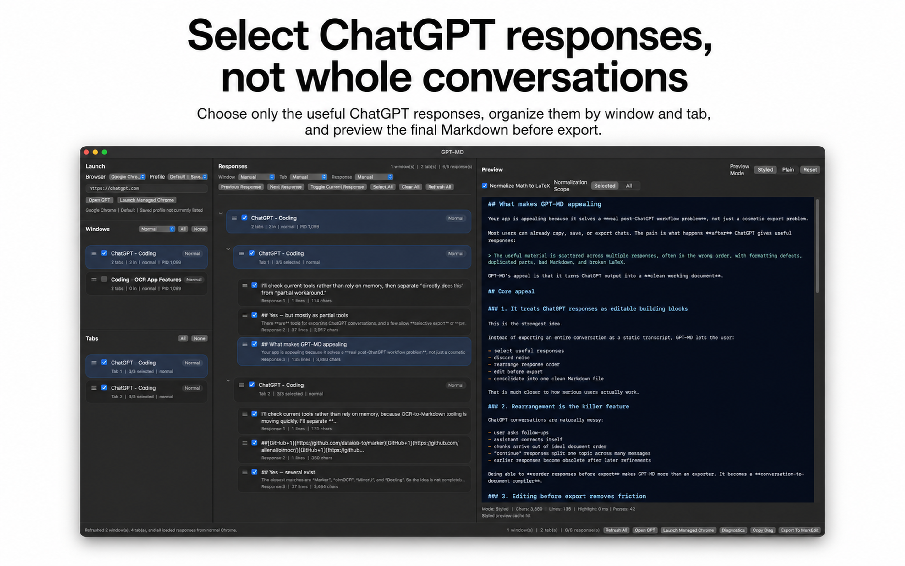
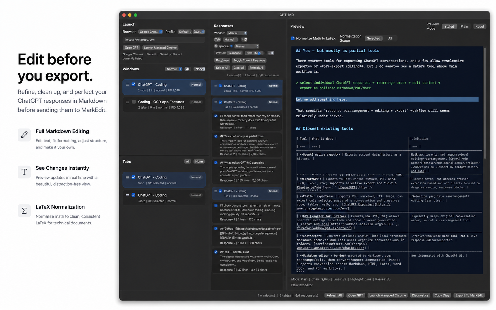
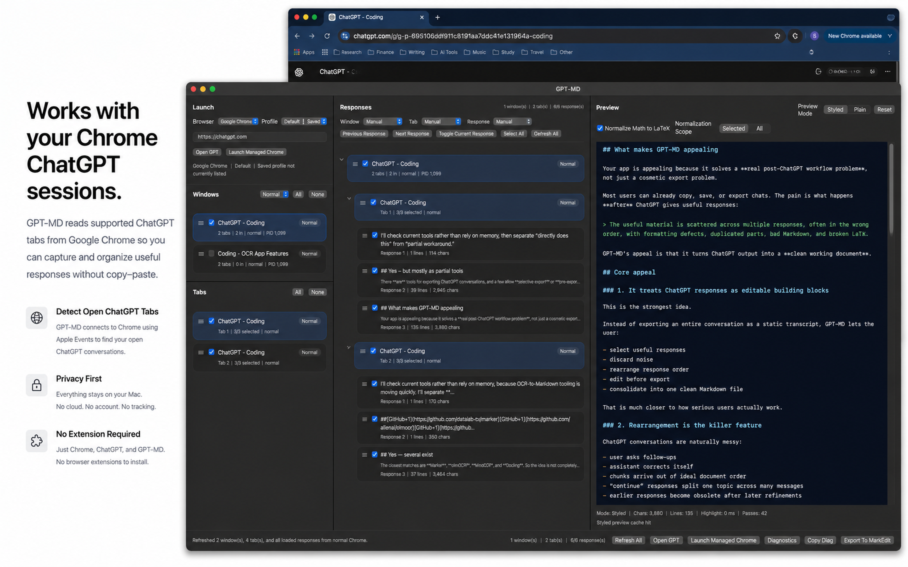
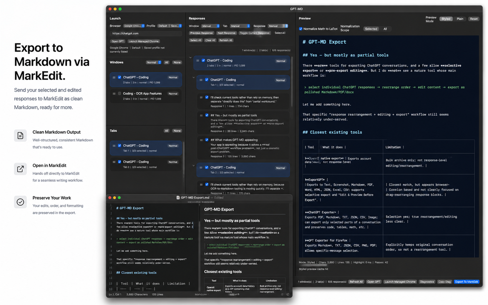

GPT-MD is a native macOS SwiftUI app for turning useful ChatGPT outputs into clean, editable Markdown documents.
Native macOS SwiftUI app
GPT-MD
Select, rearrange, edit, and export ChatGPT responses as Markdown.
Requirement note
GPT-MD works with ChatGPT open in Google Chrome.
For export, MarkEdit must be installed.
Key features
- Native macOS SwiftUI experience
- Select individual ChatGPT responses
- Rearrange response order before export
- Edit the generated Markdown directly
- Beautiful Markdown preview window
- LaTeX normalization for math-heavy content
- Export to Markdown via MarkEdit




System behavior
Technical Specification
Platform
- OS
- macOS
- App type
- Native macOS app
- Framework
- SwiftUI
- Browser target
- Google Chrome
- Export target
- Markdown via MarkEdit
Core workflow
- GPT-MD reads supported ChatGPT tabs from Google Chrome.
- User selects target windows, tabs, and responses.
- Selected responses can be rearranged and edited.
- GPT-MD generates a Markdown preview.
- Optional LaTeX normalization can be applied.
- Final Markdown is exported/opened in MarkEdit.
Required permissions
Required user state
- User must be signed in to ChatGPT in Google Chrome.
- Target ChatGPT tab must already be open.
- MarkEdit must be installed for the intended export workflow.
Optional managed Chrome mode
GPT-MD can also use a managed Chrome path with:
- separate Chrome profile
- remote debugging
- independent ChatGPT sign-in state
This can help when the normal Chrome Apple Events path is unavailable or unreliable.
Not required
- No Chrome extension
- No GPT-MD cloud account
- No Accessibility permission currently required
Output
- Markdown document
- Edited/rearranged response sequence
- Optional LaTeX-normalized math notation
- Open/export handoff to MarkEdit
Purchase and help
Sales & Support
Get GPT-MD
GPT-MD is available as a paid macOS app.
Buy / Download GPT-MDRequirements before purchase
- macOS
- Google Chrome
- ChatGPT signed in through Chrome
- Target ChatGPT tab open
- MarkEdit installed for Markdown export
- macOS Automation permission allowed for GPT-MD -> Google Chrome
- Chrome setting enabled: View -> Developer -> Allow JavaScript from Apple Events
License & legal
View Terms View Privacy Policy View EULATechnical support
For setup issues, permission problems, or export failures:
When contacting support, include:
- macOS version
- Chrome version
- GPT-MD version
- whether normal Chrome or managed Chrome mode was used
- screenshot or exact error message
- whether MarkEdit is installed
Common setup issues
| Issue | Check |
|---|---|
| Chrome cannot be read | Enable macOS Automation permission |
| JavaScript AppleScript error | Enable JavaScript from Apple Events in Chrome |
| No ChatGPT tab found | Open ChatGPT in Chrome and sign in |
| Export does not open | Install MarkEdit |
| Managed Chrome shows logged out | Sign in to ChatGPT in the managed Chrome window |